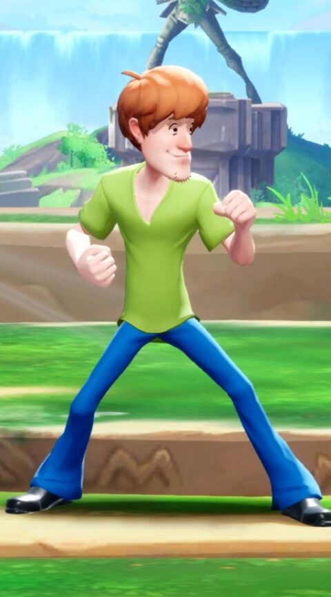
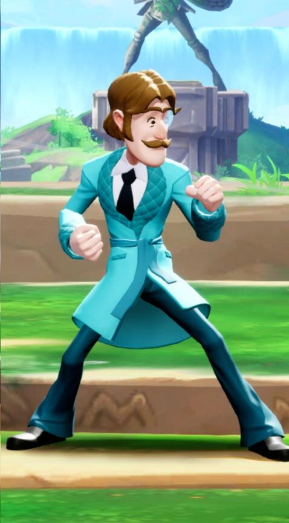
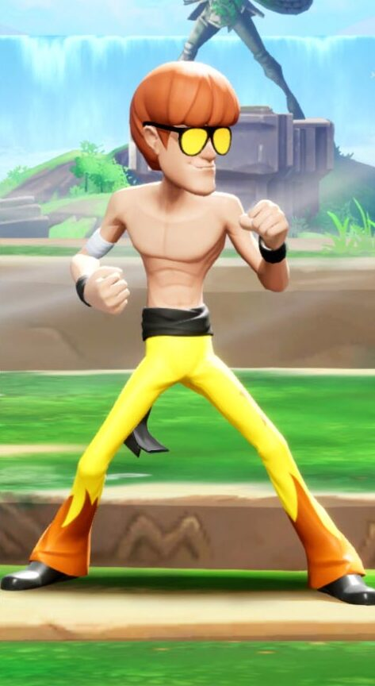
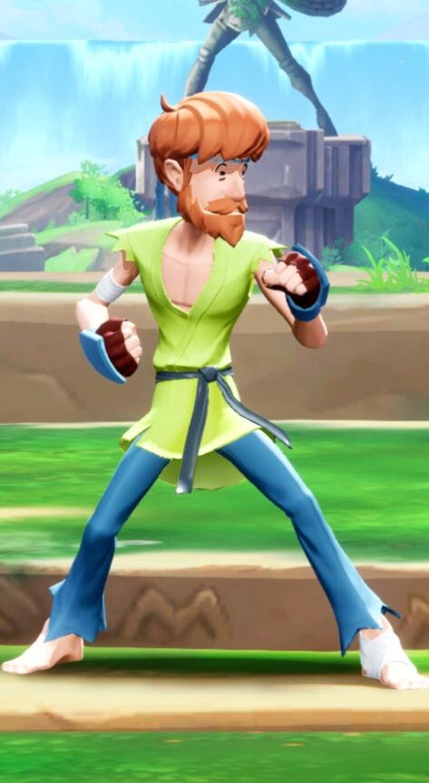

-
Salsicha
A última coisa que Salsicha se lembra antes da Mudança é ter explorado outra mansão velha e assustadora com seu amigo Scooby, como qualquer outro dia com a turma. Ele encontrou um estranho cristal brilhante e, pensando que era um doce, foi dar uma mordida. Houve um FLASH... e então escuridão. Quando voltou a si, descobriu que possuía poderes incríveis. Ele não sabe de onde vieram ou como funcionam, mas jurou usá-los para derrotar o mal e proteger os seus amigos. Assim que ele conseguir almoçar, claro.
R$15,00
-
Tio Shagworthy
Esta aparência é baseada no tio de Salsicha, Tio Shagworthy, que aparece no Scooby-Doo Show S01E06.
R$25,00
-
Salsicha Kung Fome
Esta skin original para Shaggy é uma homenagem a outro lendário ator e artista marcial: Bruce Lee.
R$40,00
-
Salsicha Cinto Preto
Esta é uma aparência original para Shaggy que parece homenagear o lendário ator e artista marcial Chuck Norris.
R$50,00